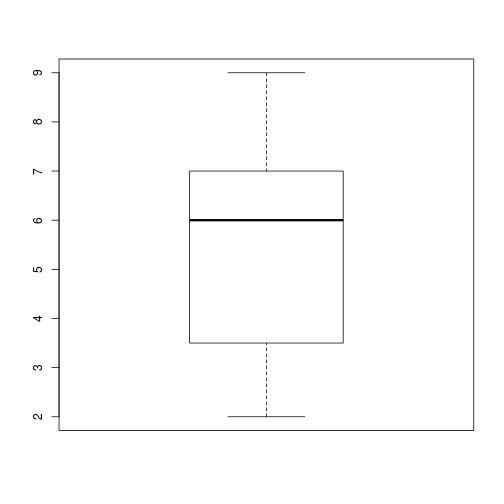
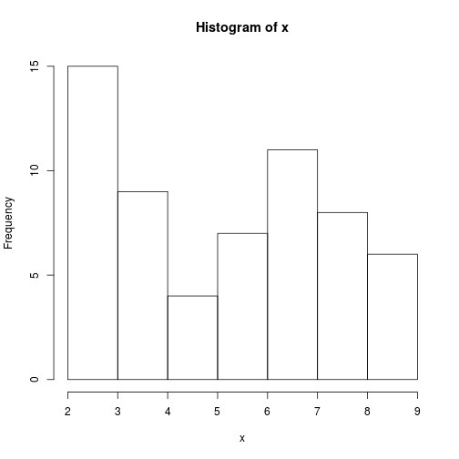
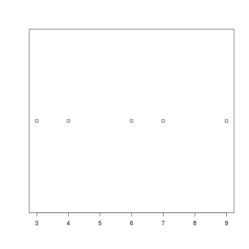
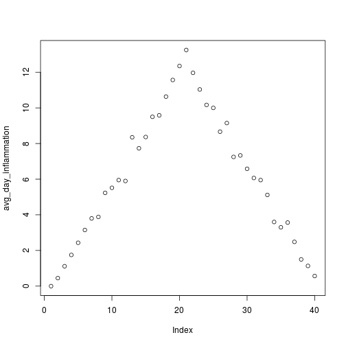
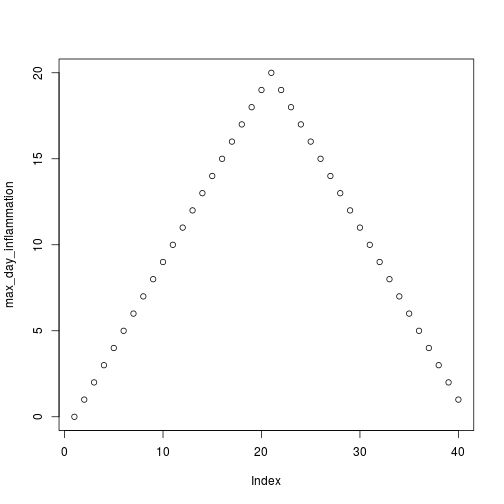
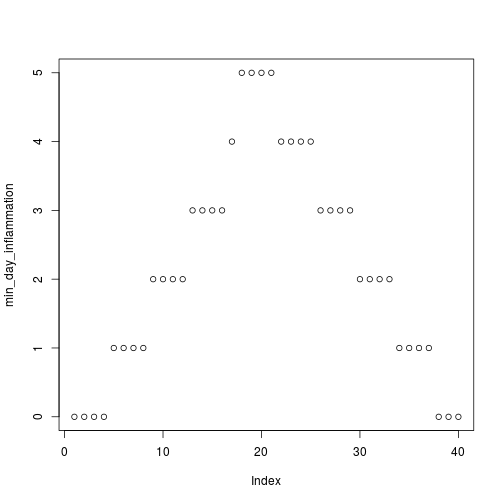

Programming with R
Visualisation
Objectives
- Learn base graphics plotting function
- Learn some basic customisation
- Other plotting frameworks:
ggplot2andlattice
Challenge - Using conditions to change behaviour
- Write a function,
plot_dist, that plots a boxplot if the length of the vector is greater than a specified threshold and a stripchart otherwise. To do this you’ll use the R functionsboxplotandstripchart.dat <- read.csv("data/inflammation-01.csv", header = FALSE) plot_dist(dat[, 10], threshold = 10) # day (column) 10plot of chunk using-conditions-01
plot_dist(dat[1:5, 10], threshold = 10) # samples (rows) 1-5 on day (column) 10plot of chunk using-conditions-01
- One of your collaborators prefers to see the distributions of the larger vectors as a histogram instead of as a boxplot. In order to choose between a histogram and a boxplot we will edit the function
plot_distand add an additional argumentuse_boxplot. By defualt we will setuse_boxplottoTRUEwhich will create a boxplot when the vector is longer thanthreshold. Whenuse_boxplotis set toFALSE,plot_distwill instead plot a histogram for the larger vectors. As before, if the length of the vector is shorter thanthreshold,plot_distwill create a stripchart. A histogram is made with thehistcommand in R.dat <- read.csv("data/inflammation-01.csv", header = FALSE) plot_dist(dat[, 10], threshold = 10, use_boxplot = TRUE) # day (column) 10 - create boxplotplot of chunk conditional-challenge-hist
plot_dist(dat[, 10], threshold = 10, use_boxplot = FALSE) # day (column) 10 - create histogramplot of chunk conditional-challenge-hist
plot_dist(dat[1:5, 10], threshold = 10) # samples (rows) 1-5 on day (column) 10plot of chunk conditional-challenge-hist


Saving automatically generated figures
Now that we know how to have R make decisions based on input values, let’s update analyze:
analyze <- function(filename, output = NULL) {
# Plots the average, min, and max inflammation over time.
# Input:
# filename: character string of a csv file
# output: character string of pdf file for saving
if (!is.null(output)) {
pdf(output)
}
dat <- read.csv(file = filename, header = FALSE)
avg_day_inflammation <- apply(dat, 2, mean)
plot(avg_day_inflammation)
max_day_inflammation <- apply(dat, 2, max)
plot(max_day_inflammation)
min_day_inflammation <- apply(dat, 2, min)
plot(min_day_inflammation)
if (!is.null(output)) {
dev.off()
}
}We added an argument, output, that by default is set to NULL. An if statement at the beginning checks the argument output to decide whether or not to save the plots to a pdf. Let’s break it down. The function is.null returns TRUE if a variable is NULL and FALSE otherwise. The exclamation mark, !, stands for “not”. Therefore the line in the if block is only executed if output is “not null”.
output <- NULL
is.null(output)## [1] TRUE!is.null(output)## [1] FALSENow we can use analyze both interactively:
analyze("data/inflammation-01.csv")  
and to save plots:
analyze("data/inflammation-01.csv", output = "inflammation-01.pdf")This now works well when we want to process one data file at a time, but how can we specify the output file in analyze_all? We need to substitute the filename ending “csv” with “pdf”, which we can do using the function sub:
f <- "data/inflammation-01.csv"
sub("csv", "pdf", f)## [1] "data/inflammation-01.pdf"Now let’s update analyze_all:
analyze_all <- function(pattern) {
# Runs the function analyze for each file in the current working directory
# that contains the given pattern.
filenames <- list.files(path = "data", pattern = pattern, full.names = TRUE)
for (f in filenames) {
pdf_name <- sub("csv", "pdf", f)
analyze(f, output = pdf_name)
}
}Now we can save all of the results with just one line of code:
analyze_all("inflammation")## Error in read.table(file = file, header = header, sep = sep, quote = quote, : no lines available in inputNow if we need to make any changes to our analysis, we can edit the analyze function and quickly regenerate all the figures with analzye_all.
Challenge - Changing the behaviour of the plot command
- One of your collaborators asks if you can recreate the figures with lines instead of points. Find the relevant argument to
plotby reading the documentation (?plot), updateanalyze, and then recreate all the figures withanalyze_all.
Key Points
- Save a plot in a pdf file using
pdf("name.pdf")and stop writing to the pdf file withdev.off().